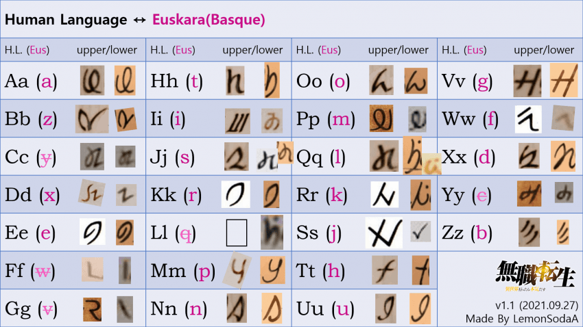
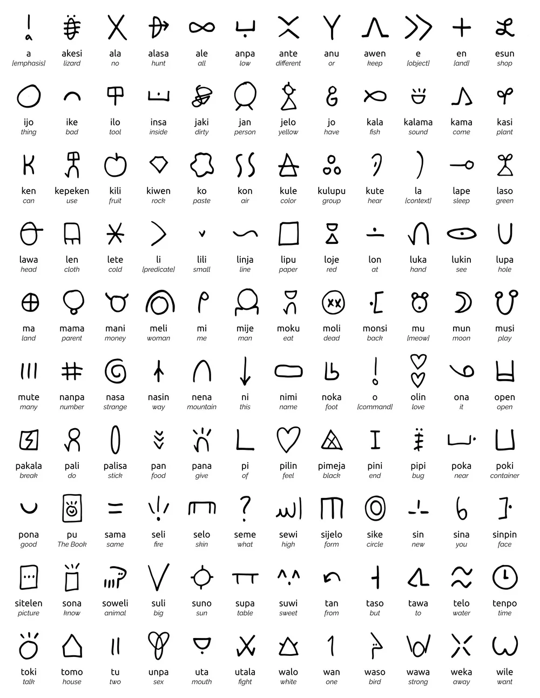
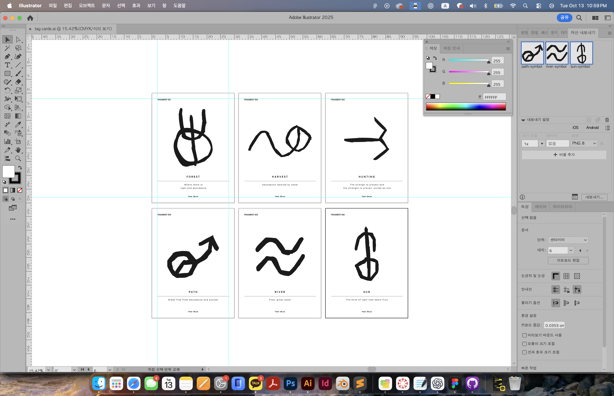
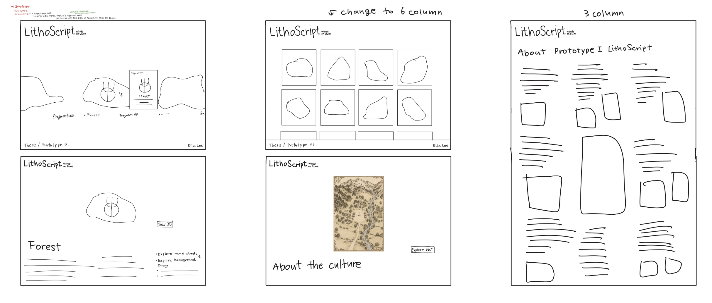

About LithoScript
An exhibition of an imagined culture and its symbolic system.
How can an invented language make an imaginary world feel historically real?
Where the project began
 256 Project / selected material
256 Project / selected materialImages/research-256.jpg
References & observations
 Reference image
Reference imageImages/research-reference.jpg

Reference image2Images/research-reference2.jpg

Reference image3Images/research-reference3.jpg
Building a symbolic system
 Culture mind map
Culture mind mapImages/culture-mindmap.jpg
 Light / Water / Abundance / Strength
Light / Water / Abundance / StrengthImages/basic-elements.png
Combination rules
Basic symbols carry meaning on their own. Combining symbols creates more complex concepts. Repetition indicates scale, intensity, or multiple purposes depending on the repeated element. Orientation and the direction of a form shape its meaning.
 Word combination sketches
Word combination sketchesImages/word-sketches.jpg
From drawing to exhibition
 Applying the symbol to stone
Applying the symbol to stoneImages/process-stone.jpg

Tag card iterationImages/tag-card-making.jpg

Website iterationImages/wrieframe-sketch.jpg
Feedback & next steps
During the class review, my peers suggested including an opportunity for people to try using the language themselves in the next prototype. They also encouraged me to strengthen the research and cultural foundations of the language, expand its vocabulary, and explore how individual words could come together to form sentences.
I will deepen my research into writing systems and the relationship between language and culture, using these findings to further develop the imagined community behind LithoScript. I will expand the vocabulary beyond the current six words and experiment with rules for constructing simple sentences. For the next prototype, I plan to create an activity that allows classmates to combine symbols and express their own messages, helping me understand how others interpret and use the system.